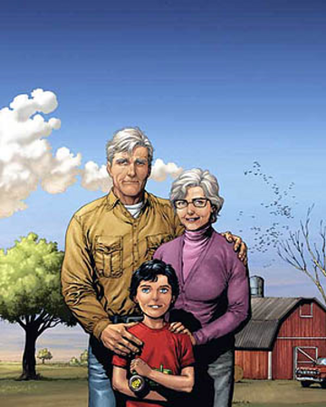

Historia
 Superman nace como Kal-El en el planeta extraterrestre llamado Kryptón. Sus padres, Jor-El y Lara Lor-Van, se dan cuenta de la destrucción inminente de Kryptón así que Jor-El comienza a construir una nave espacial que transporte a Kal-El a la Tierra. En los últimos momentos de Kryptón, Jor-El acomoda al pequeño Kal-El en la nave y comienza el despegue. Jor-El y Lara mueren justo cuando la nave escapa la explosión de Kyptón. Esta explosión vuelve los escombros de planeta en kryptonita, elemento radioactivo letal para kryptonianos con superpoderes (debido a estrellas jóvenes como el Sol). La nave aterriza en un medio rural de Estados Unidos donde es encontrada por un motociclista. Jonathan Kent y Martha Kent adoptan a Kal-El nombrándolo Clark Kent. A medida que crece Clark en la Tierra, él y sus padres adoptivos descubren que tiene superpoderes. Los Kent le enseñan a Clark a usarlos responsablemente para ayudar a otros y luchar contra el crimen. Clark mantiene sus poderes en secreto para proteger a su familia y amigos quienes podrían estar en peligro por sus enemigos. Para usar sus poderes a favor de la humanidad, Clark crea el álter ego de Superman. Varias características son añadidas a cada identidad para diferenciarlas lo suficiente para prevenir que una persona los reconozca. Superman usa un traje rojo y azul característico con una letra "S" emblemada y una capa. Clark Kent usa lentes, se peina diferente, cambia su lenguaje corporal, altera significativamente su voz y usa ropa suelta y trajes que ocultan su físico. Clark se muda a Metrópolis y trabaja como reportero en el Daily Planet donde conoce a sus amigos y compañeros de trabajo Lois Lane, Jimmy Olsen y el editor Perry White. Superman se vuelve frecuentemente el sujeto de varios artículos del periódico escritos por Lois con quien comienza una atracción romántica.